Метки
Метки — это элементы, которые позволяют автоматизировать создание документов и настраивать их содержимое в зависимости от данных или заданных условий. С их помощью можно вставлять поля в шаблон и управлять ими, задавать условия и выполнять повторяющиеся операции.
Ранее мы уже встречались с метками через использование полей. Например, при вставки полей в шаблон, использовалось: Вставить "Значение", которое соответствует метке «Значение». В поле Да/Нет мы использовали метку «Условие». В полях Перечисление и Объединение применялась конструкция «Выбор», а в поле Список использовалась конструкция «Цикл».
Добавление меток
-
Через вкладку «Метки» в верхнем меню.
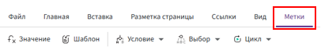
-
Щелкнув правой кнопкой мыши по области редактирования и выбрав пункт «Вставить метку».
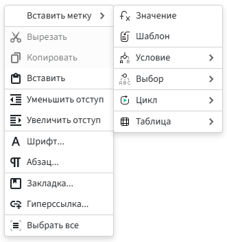
Изменение меток
Вы можете открыть окно редактирования метки двумя способами:
-
Двойной щелчок левой кнопкой мыши по метке.
-
Использование контекстного меню:
-
Щелкните правой кнопкой мыши по метке.
-
В появившемся меню выберите «Значение» → «Редактировать».
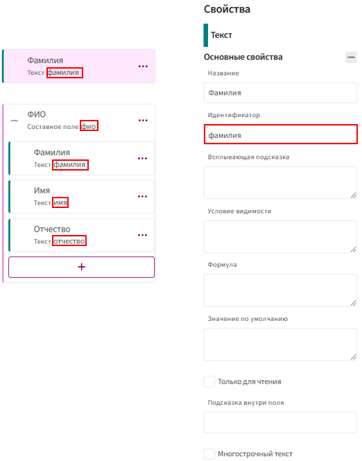
-
Метка «Значение»
Метка «Значение» — позволяет вставлять поля в шаблон по их идентификатору, а также выполнять над ними различные операции, включая применение функций и арифметические вычисления.
Поддерживаемые типы полей:
-
Текст
-
Целое число
-
Десятичное число
-
Дата
-
Время
-
Дата/Время
-
Перечисление
-
Составное поле
Возможности метки «Значение»:
- Вывод данных из полей в шаблон.
- Вычисление формул (арифметические операции, расчеты).
- Применение функций (изменение регистра, падежей, форматирование дат и чисел).
Синтаксис:
-
В метку передается идентификатор поля.
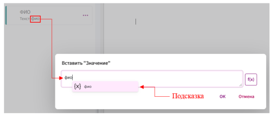
-
Если поле находится внутри составного поля, указываются два идентификатора, разделенные точкой:
-
Идентификатор составного поля
-
Идентификатор вложенного поля
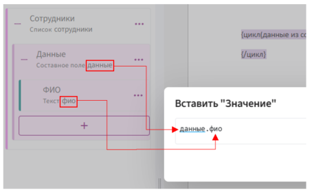
-
Метка «Условие»
Метка «Условие» используется для логической проверки значений и управления отображением данных в шаблоне. Если условие выполняется, содержимое метки добавляется в документ, в противном случае — скрывается.
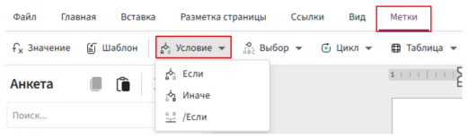
Синтаксис
{если(условие)}условие выполнено
{иначе}условие НЕ выполнено
{/если}
- Обязательные параметры:
{если(условие)}— открывающий тег, который указывает начало условия. Внутри скобок задается логическое выражение или переменная, которая проверяется на истинность.{/если}— закрывающий тег, который завершает блок условия.
- Необязательные параметры:
{иначе}— блок, который выполняется, если условие не выполнено (ложь). Если этот параметр отсутствует в конструкции, то при невыполнении условия ничего не выводится.
Принцип работы:
-
Использование логических выражений
В метке можно указывать условия, проверяющие значения полей, например:
-
Равно (
=) -
Не равно (
!=) -
Больше (
>) -
Меньше (
<) -
Логические операторы (
И,ИЛИ,НЕ)
-
-
Вложенные условия
Допускается вложенность условий для проверки нескольких параметров.
-
Использование функций
В условиях можно применять встроенные функции, например, изменение регистра, форматирование дат.
Пример использование:
В магазине действует скидка 10% на товары стоимостью более 10 000 рублей. Если стоимость товара 10 000 рублей или меньше, скидка не применяется.
Шаги:
- Создайте поле типа «Десятичное число» с наименованием
цена. - Перейдите в «Метки» → «Условие» → «Если».
-
В открывшемся окне задайте условие:
цена > 10000
Где:
- цена — идентификатор поля.
- > — символ «больше».
- 10000 — пороговое значение, при превышении которого будет применена скидка.
-
Нажмите «ОК».
- Установите курсор после
если (цена > 10000). -
Вставьте метку «Значение» и укажите формулу расчета цены со скидкой:
Цена со скидкой = Цена товара * (1 - Скидка/100)Формула учитывает:
- Скидка = 10% (в дробном выражении 0.1).
- Умножение на (1 - 0.1) = 0.9 (показывает, что из 100% стоимости товара вычитается 10%).
Пример формулы в Комбинаторе:
- цена * 0.9
Альтернативные варианты:
- цена * (1-0.1)
- цена - (цена * 0.1)
-
Нажмите «ОК».
- Для обработки случая, когда условие не выполняется, добавьте блок «Иначе».
- После блока «Иначе» вставьте метку «Значение». В метке укажите идентификатор поля Цена, так как скидка в этом случае не применяется.
- Нажмите «ОК».
- Завершите конструкцию, выбрав на вкладке «Метки» пункт «Условие» -> «/Если».
Метка «Выбор»
Метка «Выбор» используется для подстановки текста в зависимости от введённого пользователем значения.
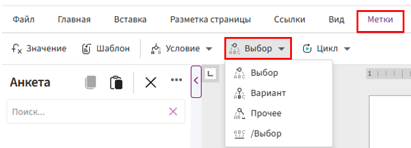
Принцип работы:
-
Проверяется значение указанного поля.
-
Если оно совпадает с одним из вариантов, вставляется соответствующий текст.
-
Если совпадения нет, срабатывает блок
{прочее}(если он есть) или не вставляется ничего.
Синтаксис
{выбор(поле)}
{вариант("Вариант 1")}Первый вариант.
{вариант("Вариант 2")}Второй вариант.
{прочее}Что происходит, если не выбран ни один вариант (значение по умолчанию).
{/выбор}
- Обязательные параметры:
{выбор(поле)}— открывает блок выбора. В скобках указывается поле, значение которого проверяется.{/выбор}— закрывает блок.
- Необязательные параметры:
{вариант("Вариант")}— задаёт конкретное значение, при котором вставляется определённый текст.{прочее}— отвечает за случай, когда введённое значение не совпадает ни с одним вариантом.
📌 Если нужно обработать только конкретные варианты, а все остальные случаи объединить в одно действие, используйте блок {прочее}.
📌 Если {прочее} не указано , при отсутствии совпадений ничего не вставляется.
📌 Значения в {вариант("Вариант")} должны точно соответствовать данным из проверяемого поля.
Пример использования
Задача:
Преобразовать текстовую оценку в числовую:
-
«Отлично» → 5
-
«Хорошо» → 4
-
«Удовлетворительно» → 3
-
«Плохо» → 2
Шаги:
- Создайте поле «Текст» с наименование
«Оценка». - Установите курсор в область редактирования, перейдите на вкладку «Метки» и выберите «Выбор» -> «Выбор».
- В открывшемся окне укажите идентификатор поля
«Оценка»:

- Нажмите «ОК».
- Установите курсор после
выбор (оценка). - Вставьть метку «Выбор» -> «Вариант».
- В появившемся окне в двойных кавычках введите слово Отлично.
- Нажмите «ОК».
- Установите курсор после
вариант ("Отлично"). - Введите цифру 5.
- Пропишите остальные варианты также.

- Для обработки случая, когда нет подходящего варианта, добавьте блок «Прочее» после цифры "2".
- Пропишите, что должно выводиться, если введенное значение не совпадает не с одним вариантом и завершите конструкцию.

Если пользователь введёт «Отлично», отобразится 5. Если введён текст, которого нет в списке, появится «Нет оценки».
Метка «Цикл»
Метка «Цикл» предназначена для повторного выполнения набора действий для каждого элемента списка. Она работает только с полем «Список», позволяя автоматически обрабатывать несколько значений.
Синтаксис
{цикл(переменная из список)}
Текст с данными: {переменная}
{/цикл}
Где:
-
{цикл(переменная из список)}– начало цикла, который проходит по каждому элементу списка. -
{список}– идентификатор поля «Список». -
{переменная}– обращение к элементу списка. -
{/цикл}– закрытие конструкции.
📌 Если список содержит составные поля, к вложенным данным можно обращаться через точку (.), например: {товары.наименование}.
Принцип работы:
-
Определение множества данных
- Цикл применяется к полю типа «Список», содержащему несколько элементов (например, перечень товаров в заказе).
-
Перебор элементов
- Внутри цикла выполняется заданный блок для каждого элемента списка.
-
Вывод результатов
- Если в списке несколько значений, конструкция повторяется для каждого из них.
-
Завершение работы
- После обработки всех элементов цикл прекращает выполнение.
Пример использования:
Задача: Вывести список товаров с указанием названия и стоимости/
Шаги:
-
Создайте поле «Список» с элементом типа «Составное поле».
-
Добавьте в составное поле:
-
Текстовое поле — для названия товара.
-
Десятичное число — для стоимости.
-
-
Установите курсор в область редактирования, выберите «Метки» → «Цикл» → «Цикл».
-
В открывшемся окне укажите:
-
Переменную ряда (идентификатор составного поля).
-
Список (идентификатор списка товаров).
-
Разделитель (по желанию:
. , ; :).
-
-
Нажмите «ОК».
-
Внутри конструкции
{цикл}добавьте текст с метками значений:{цикл(товар из списокТоваров)}Наименование: {товар.наименование}, Стоимость: {товар.цена} руб.{/цикл} -
Завершите конструкцию, закрыв цикл
{/цикл}.
📌 Если в списке три товара, вывод будет следующим:
Наименование: Телефон, Стоимость: 50 000 руб.
Наименование: Часы, Стоимость: 15 000 руб.
Наименование: Наушники, Стоимость: 8 000 руб.
Метка «Таблица»
Табличный цикл
Метка {т_цикл} используется для перебора элементов списка и генерации строк в таблице.
-
Работает только с полем типа «Список».
-
Каждая итерация создает новую строку таблицы с данными из текущего элемента списка.
Синтаксис

Где:
-
{т_цикл(данные из сотрудники)}— начало цикла, проходящего по каждому элементу списка сотрудники. -
{сотрудники}— список. -
{данные}— элемент списка. -
{данные.фио}— обращение к полю внутри списка. -
{данные.стажРаботы}— другое поле внутри списка. -
{/т_цикл}— закрывающая конструкция цикла.
📌 Важно! Цикл обрабатывает только списки.
Принцип работы
-
Цикл проходит по каждому элементу в списке (например, по каждому сотруднику).
-
Для каждого элемента создается строка таблицы, в которой могут быть отображены поля, относящиеся к текущему элементу списка (например, ФИО и стаж работы сотрудника).
-
После завершения цикла таблица будет заполнена строками, где каждый элемент списка представлен в своей строке.
Табличное если
Метка {т_если} позволяет фильтровать данные:
-
Строка отображается только при выполнении условия.
-
Может использоваться самостоятельно или внутри цикла.
-
Работает с любыми полями (не обязательно с «Списком»).
Синтаксис

Где:
-
{т_если(показатьДанные = истина)}— проверка условия (если поле "Показать данные" активно (стоит галочка в поле Да/Нет)). -
{данные.фио}— выводится, если условие истинно. -
{данные.стажРаботы}— также отображается при выполнении условия. -
{/т_если}— закрывающая конструкция.
📌 Важно! В отличие от цикла, т_если не требует списка и может применяться к любым данным.
Принцип работы
-
Происходит проверка условия.
-
Если условие истинно, то данные, находящиеся внутри условия, отобразятся.
-
Если условие ложно, данные не будут отображаться.
Пример использования табличного цикла и табличного если:
Задача: Вывести таблицу с информацией о сотрудниках, но только тех, у кого стаж работы больше 3 лет.
Решение с использованием цикла и условия:
-
Использование цикла
(т_цикл)для перебора всех сотрудников: Мы будем использовать цикл, чтобы пройти по каждому сотруднику в списке. -
Использование условия
(т_если), чтобы отобразить только сотрудников с стажем больше 3 лет: Внутри цикла добавим условие, чтобы выводить данные только для тех сотрудников, у которых стаж больше 3 лет.
Шаги:
-
Добавление таблицы:
-
Вставьте таблицу в тело шаблона (3 столбца, 6 строк).
-
В первой строке укажите заголовки столбцов: ФИО, Стаж работы.

-
-
Добавление табличного цикла:
-
Объедините ячейки второй строки.
-
Вставьте метку «Табличный цикл» («Метки» → «Таблица»).
где:
-
Переменная ряда – идентификатор составного поля (данные).
-
Список – идентификатор поля «Список» (сотрудники).
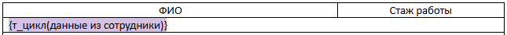
-
-
-
Настройка условия отображения сотрудников:
-
Объедините ячейки третьей строки.
-
Вставьте метку «Табличное если» («Метки» → «Таблица») с условием
данные.стажРаботы > 3.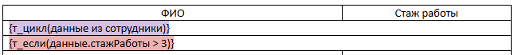
-
-
Добавление данных сотрудников:
-
В четвёртую строку вставьте значения «ФИО» и «Стаж работы» через метку «Значение»:
{данные.фио},{данные.стажРаботы}.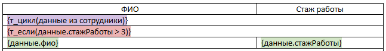
-
-
Закрытие условий:
-
В пятой строке закройте метку «/Табличное если».
-
В шестой строке закройте метку «/Табличный цикл».

-
Пояснения:
-
{т_цикл(данные из сотрудники)}— цикл проходит по всем сотрудникам в списке. -
{т_если(данные.стажРаботы > 3)}— условие проверяет, больше ли стаж работы сотрудника 3 лет. -
Если условие истинно (стаж больше 3 лет), то выводится строка с данными о сотруднике.
-
Если условие ложно, данные не отображаются.
Результат выполнения:

Метка «Шаблон»
Основной функционал метки «Шаблон» заключается в возможности подгружать данные из одного шаблона в другой с использованием всего одной строки. Например, если у вас есть два готовых шаблона — «Акт приёма» и «Акт сдачи», вы можете с помощью метки «Шаблон» подключить их к основному документу, например, после текста договора. Данная метка подгружает уже заранее созданные шаблоны.
Принцип работы:
- Путь к фрагменту – указывается источник, откуда загружается фрагмент (шаблон).
-
Параметры – не являются обязательными. Они используются только в тех случаях, когда нужно передать во фрагмент какие-то данные. Если параметры не заданы, просто загружается сам фрагмент без дополнительной настройки.
- Имя параметра – идентификатор поля из подгружаемого фрагмента (шаблона).
- Выражение параметра – идентификатор поля, куда передается фрагмент шаблона, т.е. основной шаблон.
Пример использования
-
Откройте шаблон, фрагмент которого хотите подгрузить, например, «Акт приема». Скопируйте поля, находящиеся в анкете слева: для этого нажмите на три точки рядом с анкетой и выберите пункт «Экспорт».
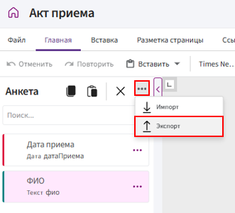
-
Перейдите в основной шаблон «Договор», нажмите на три точки слева от Анкеты и выберите пункт «Импорт».
- Нажмите «Выберите файл», перейдите в «Этот компьютер» -> «Загрузки». Выберите файл в формате .json и подтвердите действие.
-
После загрузки полей в Анкету установите курсор в область редактирования, в то место, где нужно будет отображать информацию из другого шаблона.
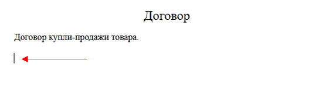
-
Откройте вкладу «Метки» и выберите пункт «Шаблон».
-
В появившемся окне укажите путь к шаблону. Для этого нажмите на три точки справа от поля «Путь к фрагменту».
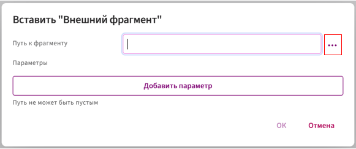
-
Выберите необходимый шаблон и нажмите «ОК».
- Сохраните изменения и проверьте результат.
Метка «Документ»
Метка ОтдельныйДокумент используется для формирования набора отдельных документов из одного шаблона (например: договор, акт, счёт).
Каждый блок, обёрнутый в эту метку, превращается в самостоятельный документ при экспорте заполненного шаблона.
Варианты экспорта:
-
Единый файл — все документы объединяются в один .docx файл;
-
Zip-архив — каждый документ сохраняется в виде отдельного файла. Пользователь может выбрать, какие именно документы экспортировать.
Синтаксис
{ОтдельныйДокумент("Договор " & наименованиеДоговора)}
...текст документа...
{/ОтдельныйДокумент}
-
"Договор "— статическая часть названия документа. Указывается в двойных кавычках. -
&— оператор конкатенации (объединения). Используется для объединения текста и значений переменных в одно имя документа. -
наименованиеДоговора— идентификатор поля, значение которого подставляется из анкеты.
Например: "Договор " & наименованиеДоговора может превратиться в:
Договор Аренды, Договор Поставки и т.д.
Пример использования
Задача: создать шаблон, содержащий три отдельных документа: договор, акт и счёт.
Шаги:
-
Установите курсор перед началом текста договора.
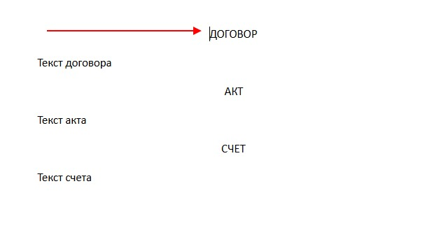
-
Перейдите во вкладку «Метки» и выберите:
Документ→Отдельный документ. -
Введите название документа.
Например:
"Договор " & инициалы(фио, Падеж.Именительный, ФорматФИО.ФамилияИО)Здесь:
-
"Договор "— фиксированная текстовая часть; -
инициалы(...)— функция форматирования ФИО; -
фио— идентификатор поля; -
&соединяет все части в единое имя; -
пробел после
"Договор "обязателен, чтобы слова не слились.
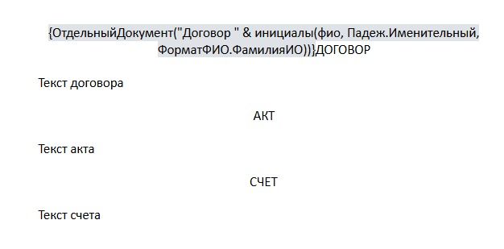
-
-
После текста договора вставьте закрывающую метку:
Документ→/Отдельный документ.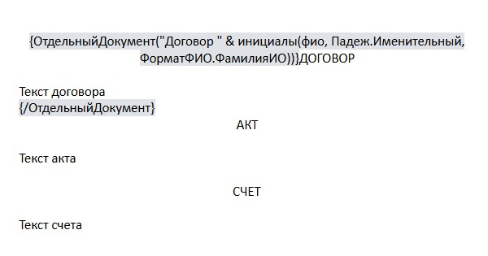
-
Повторите те же действия для акта и счёта.
-
Сохраните шаблон и проверьте результат при заполнении и экспорте.
Результат
Метка формирует отдельный документ с указанным названием при экспорте шаблона.